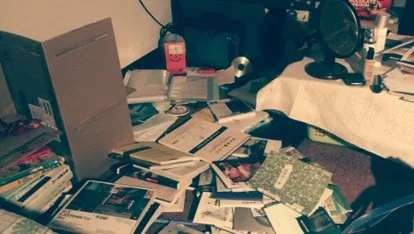

部落格 · 閱讀&生存報告
階段回顧｜致20歲迷惘的我：追求夢想的生活型態
寫在前面：
〈追求夢想的生活型態〉是大四那年寫的，寫了一些停筆，又在畢業工作幾個月後寫了一些，累積上千字的文稿始終沒有迎來完稿。我想，是時候完成它了，用過去幾年的實踐與收穫，與那些文稿––那個當年徬徨的自己對話。（我這不是來了嗎～）
當年是為了寫下對夢想的迷惘與猜想，如今嘗試給予這些猜想一個回答。我一直很喜歡這個標題，包含了追求「夢想的生活型態」與「追求夢想」的生活型態兩種意思：「我知道自己所夢想的生活型態是什麼模樣，而以此為目標去追求嗎？我知道自己的夢想是什麼，並且能夠為了追求夢想，而對相伴而來的生活型態甘之如飴嗎？」
我想要的，究竟是哪一種呢？
大四那年，在一次（也是唯一一次）夜唱後的清晨回到家，看著一地未整理的書，意識異常清明，前晚赤裸地被臨時拜訪的友人看見房裡的混亂，彷彿是種提醒：「是時候與自己的混亂坦誠相見了。」

大學的課題是「匱乏」
沒有足以稱做專長的技能，對繼續發展科系專業失去興致、又沒有勇氣貿然休學或轉系，於是「因匱乏而自卑，因自卑而焦慮」的狀況從大二開始持續三四年之久，甚至會對於不積極充實自己、放鬆耍廢抱的日子有罪惡感。
不知道自己喜歡什麼、想做什麼，對未來充滿迷惘，於是修了很多可能會感興趣的文化、語言、外系課程，參加媒體、教育類的校外活動，讀了很多不同領域與類型的書，從中發現自己的擅長與不擅長、適合與不適合、喜歡與不喜歡，慢慢刪去、分類、歸納，從而認識自己。
這段充實學習的日子是快樂而踏實的，雖然大多沒有證明能力的具體累積（例如學了兩年的法文和西班牙文也沒去考個檢定），對後來求職的幫助不大，但在往後的日子裡，對視野與思想啟發、學術研究、人際關係、生活情趣(?)等都帶來幽微的幫助。
不過，當時的目的是透過這些嘗試，找到自己真的想做的事、想發展專業的領域，就結果而言是失敗的。
可以說是毫無進度
沒有明確目標、專業特長，使得畢業後找工作十分痛苦迷惘，最終還是進了和本科系有關的公司，並這麼說服自己：「先進入我較專業的領域工作，學習一些其他產業也有用處的能力！」
我始終不曉得這個判斷是對是錯，因為這份工作只維持了短暫半年，當然有學到實務經驗，但並沒有留下什麼太了不起的成就讓履歷亮眼多少。要說最大的收穫還是在自己身上，深深體會到「原來我很重視公司本身是否符合自己的價值與理想，比薪資福利、組織文化、加班情況都還要重視(大概吧)。」
大學曾經歷太陽花學運的我，長出了「想要改變社會」的想法，可當年的自己弱小無能，也說不出具體作法和方向，只能把這樣的想法放在心底。我始終沒有忘記，只是恥於說出這麼正向偉大的想法。
果斷離職的契機之一是大學老師推坑讀研究所，也順利考上（細節可以看〈階段回顧｜三年，讀研究所的日子〉），彼時因為不願當個全職研究生、需要一份兼職，再次檢視了洋洋灑灑但沒留下什麼了不起成績的過往經歷，突然從毫不相干的環保生活習慣中靈光乍現，「生活習慣＝認同的事，讓別人也認同＝改變社會？大概吧……？」
後來就讀研究所期間，也同時在環境相關的基金會兼職，不敢說自己做了什麼偉大的事，但一些環境議題在這幾年越來越被大眾看見與討論，我想自己對於改變社會是有出那麼一點點力的吧。
研究所畢業，也離開基金會（還是覺得不是最想做的事），「想要改變社會」的想法沒有改變，只是換了一個高明點的說法：「想要擁有社會影響力」，這個希冀跟當年一樣籠統。
畢業後的工作有關知識轉譯與推廣，高負荷的工作量，使自己必須成為一個無情的工作機器，感覺痛並快樂著，直到身體發出警訊，於是轉而想要解答另一個猜想：「想做的事，也包含了想過的生活嗎？」
重點可能不只是「夢想」
「…每天我都睡到自然醒，起床後稍微打掃一下家裡等老斌去田裡回來，就開始悠哉的吃早餐，看書。接著看當天自己安排的工作是拓繪還是備課還是寫文章，就開始一邊聽音樂，一邊工作……所以很可能平均來說，我一天真正工作的時間不到四小時……我工作時間那麼少，其他時間都在幹嘛？其他時間就是我想幹嘛就幹嘛啊！……那兩萬多塊夠用嗎？在鹿野，不只夠用還有得存……」－廖瞇〈關於賺錢的工作時間〉
寫下〈追求夢想的生活型態〉時，應該是啟發自廖瞇的生活記事，發現原來也有這種生活的可能、而深感嚮往。「也許……重點不只是達到遠方的夢想，能夠擁有自己感到舒服的生活方式與節奏也很重要。」這才是長久之計也說不定？
但被社會馴化的我，對於這種想法抱持懷疑，而一直不斷選擇嘗試「找到夢想並追求夢想」一途。然而在這段假設驗證的路上，驗證「自己能否能為了追尋夢想，而忍受某種生活型態」困難且痛苦得多，探索「自己夢想的生活型態長什麼樣子」則相對容易，我也在痛苦過後走上了這條路子。
而現在的我，擁有了夢想的生活型態並感覺滿足––自由工作的型態，大抵和廖瞇的「工作的時間很少、其他的時間想幹嘛就幹嘛」相去不遠，雖然現在的收入還沒有多到不用煩惱的程度，也仍舊持續探索讓這種生活型態可以長長久久的方法。
至於夢想，其實在這段自由工作的日子裡，確實漸漸可見雛形，現在也利用「想幹嘛就幹嘛」的時間緩慢進行。不過暫時還不到可以自信、大放送的時機，所以就先寫到這裡。
寫在最後
或許對某些人來說，朝著夢想前進、披荊斬棘的日子才算真正活著，其實也很好。我也曾這麼相信、想要成為那種人而嘗試過，只是發現了那並不適合我。（或許未來會適合也說不定呢？至少現在不是）
終究是要親身走過，才知道什麼是自己想要的、什麼是適合自己的。